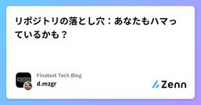

Finatext Tech Blogのフィード
https://zenn.dev/p/finatext
『金融を"サービス"として再発明する』Finatextグループのテックブログです。
フィード

リポジトリの落とし穴：あなたもハマっているかも？
Finatext Tech Blogのフィード
この記事では、Clean Architecture を中心に利用されるリポジトリパターンに関するよくあるミスや気をつけるべき点を紹介したいと思います。少しテクニカルなところから話を始めて、抽象的な問題（設計・DX）へ移っていきたいと思います。※ここで言う DX は、デベロッパーエクスペリエンスのことです。 不適切なパラメータバインディングfunc (r *Repo) GetByName(name string) (*user.User, error) { query := fmt.Sprintf("select * from users where name = '%s...
9時間前

dbt-snowflake の重要な設定
Finatext Tech Blogのフィード
はじめにこんにちは！ナウキャストのデータエンジニアのけびんです。現在ナウキャストでは dbt-snowflake を利用して Snowflake 上で ELT パイプラインを日々開発しています。基本的には dbt の使い方を把握していれば開発は可能ですが、やはり Snowflake 特有の設定というのも存在します。本ブログでは dbt-snowflake で開発をする際に個人的に重要だと思う以下の設定についてまとめます。Table - ClusteringTable - COPY GRANTSExternal TableSecure View Table - Cl...
12日前
Data Contract CLIでSnowflakeとKeyPair認証で接続する
Finatext Tech Blogのフィード
背景データのスキーマは様々な理由で変更されることがあり、データオーナー側はその変更の影響範囲を正確に把握することは難しいことが多いです。そのため、複数のデータオーナーと安全にソースデータを連携するために、新規ソースデータの連携方法を明確化する必要があり、近年、ソースデータのスキーマ情報の管理やソースデータ監視などの仕組みの必要性が重要視されてきています。そこで、Data Contractという概念を取り入れることで、ソースデータのスキーマ情報やサービスレベルの管理を安全かつスムーズに運用できないか検討していました。Data Contractでは、データの送り手（データ提供者）と...
20日前
PCI SSCカンファレンス（Barcelona）に参加してきました！
Finatext Tech Blogのフィード
この記事はFinatextホールディングスのメンバーとして、海外カンファレンス（PCI SSCカンファレンス）への参加に関して、公開したブログになります。 はじめにFinaにゃちわ～。Finatextホールディングスでシステム管理を担当しています、Motohiko（@motohiko_s8888）です。PCI SSCカンファレンスに参加するため、Barcelonaに行ってきました。Barcelonaは初めてでしたが、とてもきれいな街ですね、食べ物も美味しいし、中心街を除けば治安も良いし物価も思ったほど高くないので住みやすいなと感じました！ 魚介のパエリアは最高！ PC...
1ヶ月前
生成AI週報（11/04~11/10）
Finatext Tech Blogのフィード
こんにちは、ナウキャストでLLMエンジニアをしているRyotaroです。11/04~11/10で収集した生成AIに関連する情報をまとめています。※注意事項内容としては自分が前の週に収集した生成AIの記事やXでの投稿・論文が中心になるのと、自分のアンテナに引っかかった順なので、多少古い日付のものを紹介する場合がありますそれでは行きましょう ひとことかなり遅れての週報ですが、この年末年始で追いつくのでご容赦ください笑!2024/12/25時点での情報です！生成AI関連の情報は update が早いので適宜最新情報をチェックするようにお願いします！ Docling1...
2ヶ月前
【入社エントリ】Finatextに入社して９ヶ月経ちました
Finatext Tech Blogのフィード
はじめに2024 年 3 月入社の reoです。入社エントリーというにはだいぶ時が経ってしまったのですが、この記事の目的は以下のとおりです。Finatext に興味をもってもらい、選考に進んでもらうきっかけにしたい一緒に働く社員に対して改めて自己紹介する Finatext に入社する前新卒でネットワークエンジニアとして就職したのですが、日々自動化ツールを書いている内に、プログラマーへの興味が募り、スキルチェンジを目的に転職しました。プログラマーとして最初に配属されたプロジェクトで Java と Go を採用していたこともあり、必然的にバックエンドを軸にキャリアをス...
2ヶ月前
年末なのでAWSのルートユーザーの認証情報を大掃除した
Finatext Tech Blogのフィード
Finatextの @s_tajima です。この記事は、Finatextグループ Advent Calendar 2024の25日目の記事です。今回は、年末なのでAWSのルートユーザーの認証情報を大掃除して、その不正利用のリスクと運用の手間を削減した話です。具体的には、AWSが最近リリースした Centrally manage root access in AWS Identity and Access Management (IAM) の機能を使いました。自身の所属する組織において、AWSアカウントの管理を担当されている方に参考にしてもらえると嬉しいなと思っています。 C...
2ヶ月前
Hasura Cloud + Amazon CognitoでJWT認証する
Finatext Tech Blogのフィード
Finatextグループ Advent Calendar 2024 24日目の記事です。 この記事で解説することAmazon Cognitoのセットアップ（ユーザプールの作成と各種トリガーの設定）から、Hasuraへの認証情報の連携までの手順を解説します。JWT認証は、CognitoのホストされたUI、又は、Cognito API（amazon-cognito-identity-js）を使用して実装する2パターンを紹介します。!Cognito、Hasura、及びGraphQLについての詳細な解説は割愛します。前提として、各サービス、技術の基本的な概念については理解しているもの...
2ヶ月前
[2024年版]FinatextグループのPCの標準スペックを紹介します
Finatext Tech Blogのフィード
皆さま、こんにちは。トリングことSEKIと申します。この記事はFinatextグループ Advent Calendar 2024の23日目の記事です！https://qiita.com/advent-calendar/2024/finatextgroup昨日は @tieyaki さんが「保険金請求処理でのAIテック企業の紹介」という記事を公開しています。https://zenn.dev/finatext/articles/c6bde24b8e50ce 最初に - このエントリは？本エントリでは情シス初心者向けに『[2024年版]FinatextグループのPCの標準スペックを紹...
2ヶ月前
保険金請求処理でのAIテック企業の紹介
Finatext Tech Blogのフィード
Finatextグループ Advent Calendar 2024 22日目の記事です。 はじめにこんにちは！FinatextのInsurTech事業に所属するデータサイエンティストの高橋です。保険会社の重要な業務の一つに保険金(給付金)請求があります。これは保険契約者が事故（例えば、病気や事故、災害など）に遭遇した際に、保険会社に対して保険金の支払いを求める手続きのことを指します。請求を受けた保険会社の担当者は、契約者から提供された情報に基づいて保険金が支払われるかどうかを判断します。保険業界でもここ数年AIを利活用する動きは盛んですが、保険金請求処理での活用例も多くあります...
2ヶ月前
Tailwindがデザイントークンを定義するのに向いている話
Finatext Tech Blogのフィード
はじめにFinatextグループ Advent Calendar 2024 21日目の記事ですこんにちは！Finatextのクレジットドメインでエンジニアをしている名澤(@studiokaiji)です。この記事では、デザイントークンをTailwindで管理する方法と、そのメリットについてお話ししていきます。 そもそもデザイントークンってなんだっけデザイントークンとは、デザインシステムのうちのUIの基本的な要素（色、タイポグラフィ、スペーシング、アニメーションなど）を再利用可能な変数として定義しているものです。これらを適切に管理することで以下のようなメリットがあります。...
2ヶ月前
AWS re:Inventの事前に知っておきたかったこと10選
Finatext Tech Blogのフィード
この記事はFinatextグループ Advent Calendar 2024 20日目の記事です。 英語に自信のない私がAWS re:Inventで生き残った話「まさか自分がラスベガスで世界最大級のテックカンファレンスに参加することになるとは...」エンジニアになって AWS を使い始めてから、ずっと憧れていた re:Invent。Finatext では海外カンファレンスへの参加を支援してくれると知り、思い切って手を挙げてみました。そして、本当に参加が決まったのです。TOEIC 700点くらい。英会話は何とか日常会話レベル。世界中から技術者が集まるカンファレンスに、この英語力...
2ヶ月前
データエンジニアとして入社して3ヶ月が経ちました（株式会社ナウキャスト入社エントリー）
Finatext Tech Blogのフィード
この記事は、Finatextグループ Advent Calendar 2024 の19日目の記事です。 はじめにはじめまして、株式会社ナウキャストでデータエンジニアをしております加藤です。企業のアドベントカレンダーに参加するのは初めてなので、何を書こうかと悩みましたが、10月に入社してちょうど3ヶ月が経過しようとしているので、入社エントリーを書きたいと思います。稚拙な内容ではございますが、お付き合いくださいませ。 これまでの経歴私は大学で歴史を勉強していたため、文系人間ではありましたが、28歳になったタイミングで一念発起し、職業訓練校でJavaを4ヶ月間習い、その後なんと...
2ヶ月前
グループ会社 Teqnological の紹介
Finatext Tech Blogのフィード
この記事は、Finatextグループ Advent Calendar 2024 の18日目の記事です。 はじめにおはこんばんちは。Finatextのフィンテックソリューション事業でエンジニア/アーキテクトとして働いているryotaro9129です。普段はパートナー企業の皆様にWEBアプリケーション開発の支援や提案を行っています。Finatextグループは、約200のAWSアカウントを運用していたりと、スタートアップとしてはかなりの数のサービスを提供・支援しています。今日は、そんなFinatextグループのサービス開発を支えているグループ会社、Teqnologicalについてお話...
2ヶ月前
第一回 AWS GameDay DOJO YABURI for 金融プラットフォーマー で優勝しました
Finatext Tech Blogのフィード
この記事は、Finatextグループ Advent Calendar 2024の17日目の記事です。 はじめに初めまして、株式会社 Finatext で証券事業のエンジニアを務めている Toshiya Matsuzaki です。2024 Japan AWS Jr. Champions として選出され、AWS 関連でイベント参加や登壇等の活動を行っています。2024 年 10 月 25 日に開催された「AWS GameDay DOJO YABURI for 金融プラットフォーマー」に参加し、Finatext チームで見事優勝を果たしました。強力なメンバーのサポートを受けながら、初...
2ヶ月前
Snowflake の Adaptive Join Decisions
Finatext Tech Blogのフィード
この記事は、Snwoflake Advent Calendar 2024の16日目の記事です。 はじめにこんにちは！ナウキャストのデータエンジニアのけびんです。Snowflake は日々クエリ実行が早くなるようにさまざまな開発をしてくれています。最近新しいパフォーマンス機能である "Adaptive Join Decisions" がリリースされ、 9.5% もクエリパフォーマンスが改善されたそうです。ユーザーは自動的にこの恩恵を受けられます、嬉しいですね。https://www.snowflake.com/engineering-blog/query-acceleration...
2ヶ月前
Goのエラーについて
Finatext Tech Blogのフィード
Go のエラーに関しては、他の言語と少し考え方が異なっているので好き嫌いがある気がします。この記事では Go のエラーをどのように扱えば良いのか、何がベストなのか、何が NG なのかといったことについて述べたいと思います。ご意見やフィードバックをいただけますと嬉しいです！ Go のエラーの特徴Go の error はインターフェースであり、Error() string というメソッドさえあればどの型でもエラーとして扱うことができます。つまり、制限なしに使用できる第一級オブジェクト (first-class citizen) です。他の言語でいう Exception で...
2ヶ月前
RubyのActiveRecordでMySQLに接続できるRubyGemを公開しました(SSH経由でも接続できるよ)
Finatext Tech Blogのフィード
この記事は、Finatextグループ Advent Calendar 2024の16日目の記事です。 はじめにこんにちは、Finatextのインシュアテック事業でバックエンドエンジニアをしている岸と申します。今回は、RubyのActiveRecordでMySQLにSSH接続できるRubyGemを作成しましたので、その紹介をさせていただきます。 TL;DRこちらのRubyGemを作ったのでぜひ使ってみてください！https://rubygems.org/gems/active_record_mysql_replGitHubのREADMEにはサンプルのDBやコマンドのショー...
2ヶ月前
Data Contract CLIでデータテストを行い、dbtのschemaを生成する CI/CD
Finatext Tech Blogのフィード
この記事はdatatech-jp Advent Calendar 2024の15日目の記事です。 背景データのスキーマは様々な理由で変更されることがあり、データオーナー側はその変更の影響範囲を正確に把握することが難しいです。そのため、複数のデータオーナーと安全にソースデータを連携するために、新規ソースデータの連携方法を明確化する必要があります。近年、ソースデータのスキーマ情報の管理やソースデータ監視などの仕組みの必要性が重要視されてきています。そこでData Contractという概念を取り入れ、ソースデータのスキーマ情報の管理を行うことが最近のトレンドとなっています。Da...
2ヶ月前
OktaとCognito Hosted-UIを使って100行くらいでSSOを実現する
Finatext Tech Blogのフィード
この記事は、Finatextグループ Advent Calendar 2024の15日目の記事です。 はじめにこんにちは。株式会社Finatextでアーキテクトをしている大島です。今回は、Okta[1]とAmazon Cognito[2] の Hosted UIを使用したSSO（シングルサインオン）というテーマで執筆しました。弊社では、社内で使用しているさまざまなツール（SlackやKiteRa、社内専用AIチャットボット「Alfred Chat」）を使用する際のSSOの手段として、Oktaを利用しています。近々新たに自社サービスで使用する管理画面を作成することになり、同様にO...
2ヶ月前